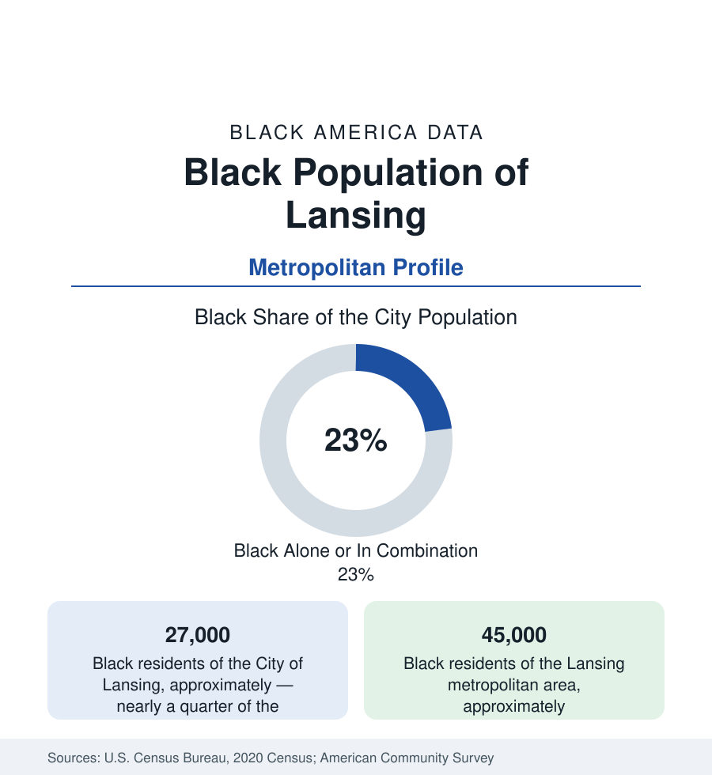

Black Cities
Black Lansing: The Capital City's South and West Sides
Lansing holds about 27,000 Black residents in the city and 45,000 across the metro — Michigan's capital, an auto town, and a state-government city. The census profile.

Lansing holds about 27,000 Black residents within the city — Black alone or in combination, nearly a quarter of its 113,000 people — and about 45,000 across the metropolitan area. Michigan's capital pairs two payrolls that shaped its Black community in tandem: the state government of the capitol complex, and Oldsmobile — Ransom Olds' company, whose Lansing plants made the city an auto town for a century — drawing the Southern migration up the same rails that served Detroit and Flint, at a capital's steadier scale.
The South Side, Westside, and the Olds Corridors
The geography concentrates south and west: the South Side along Martin Luther King Jr. Boulevard and Pleasant Grove (the postwar heartland — its subdivisions and church row, the Letts Community Center's ground, the neighborhoods that grew with the plants and the state offices), the Westside's older streets near the capitol (the Westside neighborhood's porches and the St. Lawrence hospital district), the North Side's smaller historic pocket, and the Waverly corridor toward Delta Township where the suburban spread runs. The institutional map carries the African American cultural anchors — the churches of the south and west corridors, the Black-owned businesses of the MLK spine, and in East Lansing next door, Michigan State University: the land-grant giant whose 50,000 students and Black enrollment file make the metro a college region — with its own Black alumni and faculty world (and the slavery-to-abolition research and the university's reckonings in the campus archive). Lansing Community College downtown carries the workforce tier.
Capitol Clerks and Assembly Lines
The employment data blend the two payrolls: state government (the capitol complex and the agency campuses in the western districts — the Black professional and clerical class of the bureaucracy, the capital-city file in its purest Michigan form), the GM remnant (the Lansing Grand River and Delta Township assembly plants — Camaro's successors and the crossovers, the survivors of Oldsmobile's 2004 marque death and the plant closings that preceded it), Michigan State's payroll across the river, the healthcare systems (Sparrow, McLaren), and the insurance row (the Jackson National and Auto-Owners headquarters class of employers). The indicators record the mid-Michigan pattern: incomes in the state band, poverty concentrated in the south and west tracts, homeownership in the southside subdivisions and Waverly edge — and the civic file of a capital whose school district (Lansing's, majority-minority in the enrollment data) carries the urban education ledger at a small city's scale.
The Cultural and Political File
Lansing's Black civic history includes a chapter the national record knows: Malcolm Little — Malcolm X — spent part of his boyhood here, in West Lansing and Mason, after his father Earl Little's death (the minister, a Garvey organizer, killed in a 1931 streetcar incident the family always disputed) — the marker and the school name in the modern city keep the chapter on the map. The movement file runs through the NAACP's capital chapter, the fair-housing and school fights of the 1960s–70s, and the political data of the statehouse city: Black legislators from the Lansing districts across the modern record, the county and city offices following the south-west base, and the capitol's own workforce politics as the standing text. The cultural ledger adds the Wharton Center's stages at MSU, the city's Juneteenth at the state capitol (a signature observance, among the state's most established), and the RE Olds Museum's auto archive downtown.
Change and the Estimates
The estimates show the metro stable-to-growing on the university and the state payroll — the Black population growing slowly in count, the share edging with the suburbs (Delta and DeWitt townships) — with the current files running through the downtown and Michigan Avenue corridor rebuild, the McLaren and Sparrow expansions, the battery-and-EV investments announced for the region's plants in the industry's transition era, and the southside's corridor plans. The capital's next data chapter will be written by the same two payrolls that wrote the last one — the state and the car — at whatever scale the new century assigns them.
Reading the Lansing Numbers
Lansing's 45,000 metro Black residents are a capital's community: clerks and line workers of the same migration, a quarter of the city that governs Michigan by day and goes home to the South Side at night — with a schoolboy named Malcolm Little in its archive, who left and shook the world.
More in Black Cities
Black Atlanta: Population, Distribution, and Growth of a Black Metropolis
Metro Atlanta holds more than two million Black residents — roughly one in three, second only to New York. The suburban distribution, migration history, and composition of Black Atlanta in the census data.
Black New York: The Largest Black Population in America
The New York metropolitan area holds about 3.4 million Black residents — more than any metro in the nation — and the city itself about two million. The census profile.
Black Washington: The District and the Metro
The Washington metro holds about 1.6 million Black residents, and the District itself — long a majority-Black city — now records a Black share near 41 percent. The census profile.
Source: U.S. Census Bureau, 2020 Census; American Community Survey; Population Estimates Program.